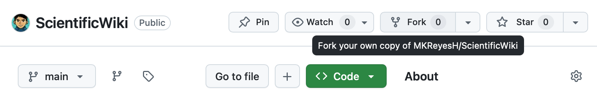
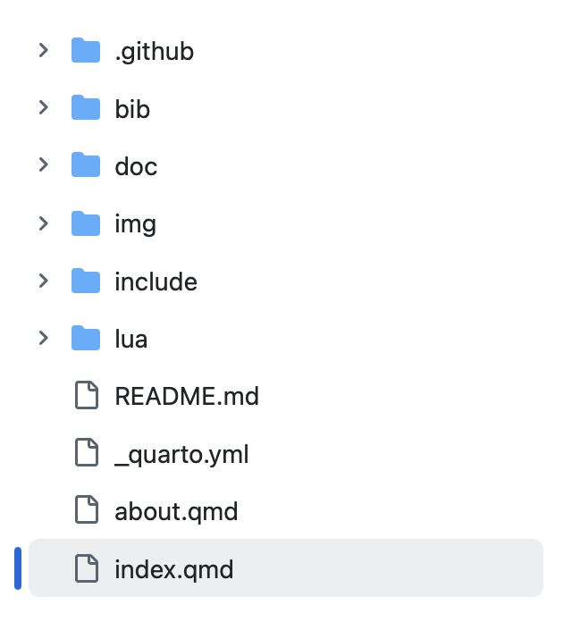
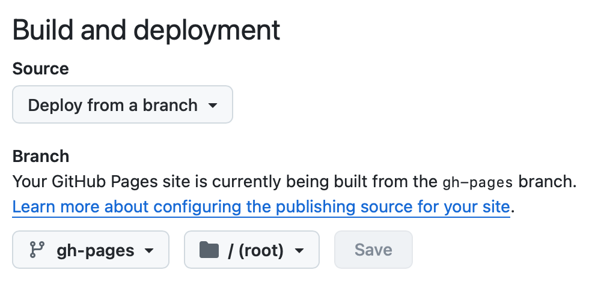
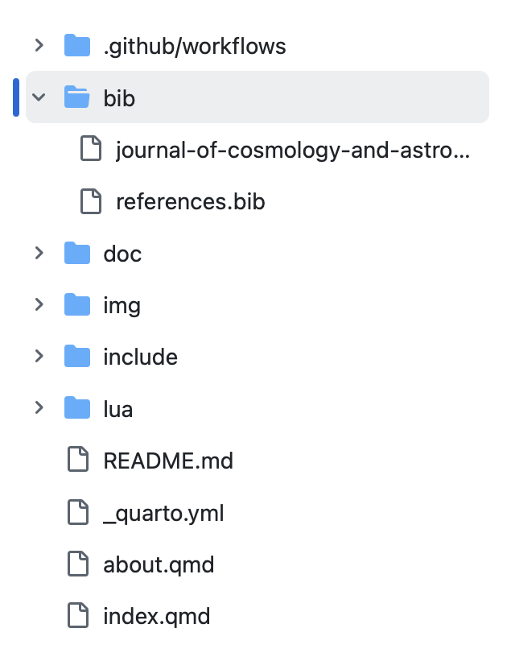
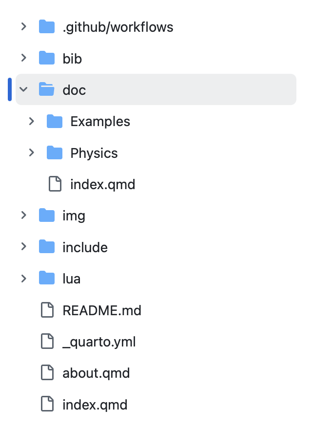

Scientific Wiki Template
How to use this template
This guide outlines the basic steps to set up, configure, and publish your own version of this Scientific Wiki.
1. Fork and Initialize
First, fork this repository to your own GitHub account.

Once this is done, you will have the base template files in your new repository:

To enable website hosting, you need to create an empty branch called gh-pages. Then, navigate to your repository settings, go to the GitHub Pages section, and select the gh-pages branch as your build and deployment source:

2. Configure Your Wiki
The main configuration for the website is handled inside the _quarto.yml file. You can customize this file to change the site’s title, logo, navigation sidebar, and bibliography settings:
website:
title: "Scientific Wiki Template"
search: true
sidebar:
style: "docked"
logo: "img/logo/logo.png"
contents:
- href: index.qmd
text: "Home"
- auto: "doc/"
- href: [https://github.com/MKReyesH/ScientificWiki](https://github.com/MKReyesH/ScientificWiki)
text: "GitHub Project"
- href: about.qmd
bibliography: bib/references.bib
csl: bib/journal-of-cosmology-and-astroparticle-physics.cslYou can manage references by adding .bib files to the bib/ folder. You can also change the citation style by updating the csl file path. Quarto supports many Zotero styles, which can be found at the Zotero Style Repository.

3. Add Content
To add new pages to the wiki, simply create a new file inside the doc/ folder. The system will automatically recognize the file and add it to the sidebar navigation. The sidebar reproduces your exact directory structure, so you can create drop-down menus simply by placing files inside sub-folders:

All content files must use the .qmd extension and be written using Quarto Markdown syntax. For a detailed guide on native formatting, please see the Quarto Markdown Guide. Anticipating that a lot of scientific content is already written in LaTeX, this template also includes custom compatibility for common LaTeX structures. The commands that are safe to use in the .qmd files are explained in the Allowed LaTeX Syntax Guide. For more complex structures like figures or tables, native Markdown syntax must be used.
4. Commit changes and Deploy
Every time you commit changes to your repository, GitHub Actions will automatically take care of the deployment phase. The updated webpage will be built and pushed to the gh-pages branch, going live online in just a few minutes.